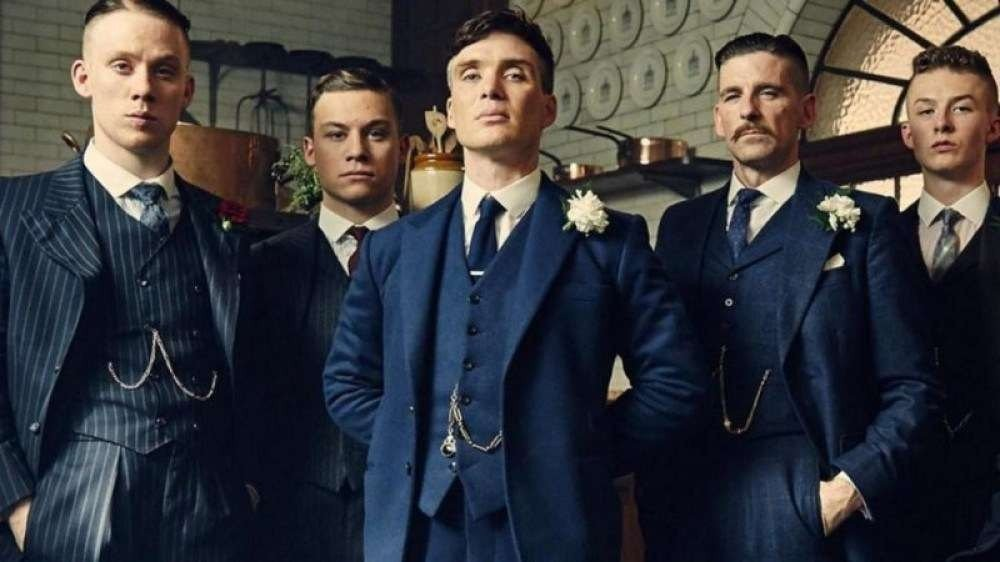

O meu projeto será realizado com o tema de uma série chamada Peaky Blinders
Em Peaky Blinders, Thomas Shelby (Cillian Murphy) e seus irmãos retornam a Birmingham depois de servir no exército britânico durante a Primeira Guerra Mundial. Shelby e os Peaky Blinders, a gangue de criminosos da qual ele é líder, controlam a cidade com mãos de ferro, construindo um império que vai desde corridas de cavalo adulteradas e roubo de carregamentos até parcerias secretas com os russos. Mas as ambições de Shelby se estendem para além de Birmingham, e ele não vai deixar que ninguém atrapalhe seus planos de se tornar um dos homens mais poderosos do Reino Unido. À medida que sua família se destaca nos negócios, novas alianças se formam, bem como novas e perigosas rivalidades. Ao mesmo tempo que vive as transformações políticas, econômicas e sociais do início do século 20, Shelby precisa lidar com os traumas de seu próprio passado - que parecem atormentá-lo diariamente.
